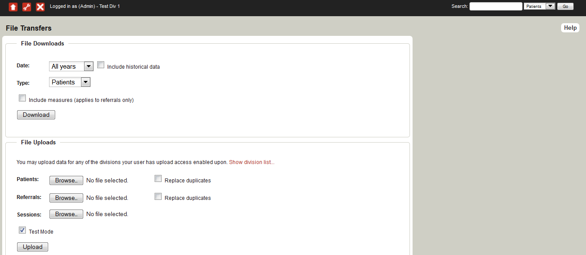

ATAPS Help - File Transfers (Downloads and Uploads)

Downloads
Data downloads are in Comma Separated Values (CSV) format. On most systems running Microsoft Office this format will open in Microsoft Excel by default. CSV data can be imported into many different software packages such as Microsoft Access (a popular desktop database) and SPSS (a common statistical package).
- Click 'File Transfers' from the home page. This will bring up the 'File Transfers' page.
- In the 'File Downloads' section choose the financial year of the data to download. You may also choose "All years".
- If you wish to include historical data from before the Divisions of General Practice and Medicare Local to Professional Health Network migration click the 'Include historical data' checkbox.
- Choose the type of data you wish to download. For referral data you can also choose to include the measures by selecting the "Include measures" tick box.
- Press the "Download" button to begin the download process.
More information on downloading data is available on the FAQs.
Uploads
You may upload patient, referral, and session data in CSV format as an alternative to entering the data directly into the online MDS system. The upload data format is the same as the download format. See the "Format" section below for detailed information.
Patients
Uploaded patient data is cumulative, that is, new patients are added to the patients stored in the database. By default the upload will fail if it includes a patient who has previously been uploaded. By selecting the "Replace duplicates" tickbox you can force the upload to replace existing patient details with the newly uploaded details. NOTE: The MDS will accept patient key codes with a minimum of 2 characters in length and a maximum of 50 characters.
Uploading Historical Patient Records
Since the MDS data migration (to PHNs from amalgamating divisions (in 2012/2013) or Medicare Locals (in 2015)), a feature was introduced to allow users to retrieve records from historical data. This is mainly because the migration only brought in records for active patients within the past 12 months. All other data was left behind in the former database(s).
When you upload data to the MDS, the system will not automatically locate records unless they are in the current dataset. However, if certain patients exist in your historical (amalgamating) organisations, then the MDS will provide options for you to bring in these records into your current dataset.
When uploading data to the MDS, if your file(s) contain references to patients not in your current dataset, an error message similar to the following will appear:
‘Historically active patient with patient key 123’
This error message suggests that you are trying to upload data pertaining to historical patient records. There are several options you now have to rectify this issue:
- Only upload new data. Some Primary Health Networks have traditionally uploaded their entire database every time they undertake an upload. This is not necessary and only adds problems to the upload process. Please ensure you are only uploading new data.
- If you genuinely need to resurrect a patient record from within your historical database, once you have attempted your upload, the system will generate ‘take’ buttons for you to select from. For example:
- Take patient from Division A, or
- Take patient from Medicare Local B, or
- Create new patient in Your PHN
- ‘Create new patient…’ offers you the option to create a new patient record within your new PHN, which should only be undertaken if you genuinely need to create a brand new patient record.
Referrals
Uploaded referral data is cumulative, that is, new referrers are added to the referrals stored in the database. By default the upload will fail if it includes a referrer who has previously been uploaded. By selecting the "Replace duplicates" tickbox you can force the upload to replace existing referrer details with the newly uploaded details.
Uploading Historical Referral Records
Since the MDS data migration (to PHNs from amalgamating divisions or Medicare Locals), a feature was introduced to allow users to retrieve records from historical data. This is mainly because the migration only brought in records for active referrers within the past 18 months. All other data was left behind in the former database(s).
When you upload data to the MDS, the system will not automatically locate records unless they are in the current dataset. However, if certain referrers exist in your historical (amalgamating) organisations, then the MDS will provide options for you to bring these records into your current dataset.
When uploading data to the MDS, if your file(s) contain references to referrers not in your current dataset, an error message similar to the following will appear:
‘Errors detected in upload - Historical Referrer with nickname ABC’
- Take Referrer from Division A, or ML B
- Create new Referrer in Your PHN
This error message suggests that the referrer identified as 'ABC' was detected in historical referral records data from 'Division A' or 'ML B", which were merged to create 'Your PHN'. Only referrers who had made referrals in the 12 months prior to the conversion from Organisations to PHN's were automatically converted across.
The options you now have to rectify this issue are:
- Only upload new data. Some PHNs have traditionally uploaded their entire database every time they undertake an upload. This is not necessary and only adds problems to the upload process. Please ensure you are only uploading new data.
- If you believe that this referrer is the same person as identified in the historical 'Division A' or 'ML B' data then you can select the first option 'Take Referrer' to convert their historical data over.
- If you believe that they are a different person then select the second option 'Create new Referrer'.
Sessions
Uploaded session data is cumulative, that is, new sessions are added to the sessions stored in the database. The upload will fail if it includes a session with the same patient key and referral date that has previously been uploaded.
Unique identification of sessions for uploads
In order to upload session data where multiple sessions were delivered for the same referral on the same day, sessions can be uniquely identified. The field 'org_ses_id' can be added to a session upload file.
The 'org_ses_id' field is optional. It must be unique for the associated referral and may contain up to 64 printable ASCII characters. The 'org_ses_id' is combined with referral information (patient key and referral date) to provide a unique key for session identification. The MDS uses this composite and unique key to determine if an existing session is being updated or a new record should be created.
There are many possiblities for generating your 'org_ses_id' identifiers. Ideally this should be something meaningful to your Primary Health Network, for example,
- if your database already has a unique id (primary key) for every session, you may use that; or
- a running count of the number of sessions delivered for the specific referral.
Please Note:
- Once a session has been created in the MDS with an 'org_ses_id' identifier, it will not be possible to modify the 'org_ses_id' for the session record in the MDS.
-
If two records have the same patient key and referral date, and one has nothing in the org_ses_id field and the other has something in it, they will be considered to be different sessions.
-
Any record with an org_ses_id value will operate in a "replace duplicates" mode. That is, if the composite key of (patient key, referral date, org_ses_id) identify an existing session record in the MDS it will be updated, otherwise a new record is created.
Test Mode
When this checkbox is selected the uploaded data is checked for errors but is not inserted into the database. This can be useful when testing your upload processes. Note that this feature is "locked" on by default as it is possible to cause data loss by uploading incorrect data. Please contact support@ataps-mds.com to request uploads be enabled.
Format
Please refer to the 'Upload File Format' page for information on file formats.